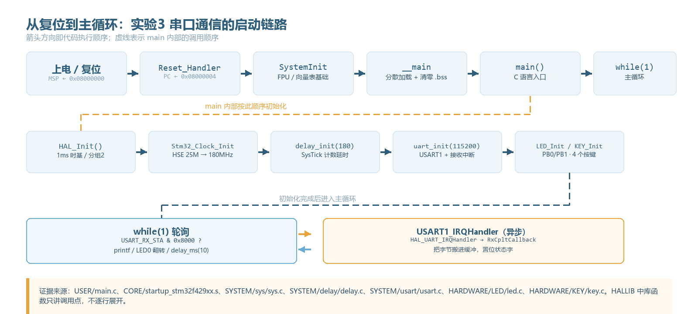
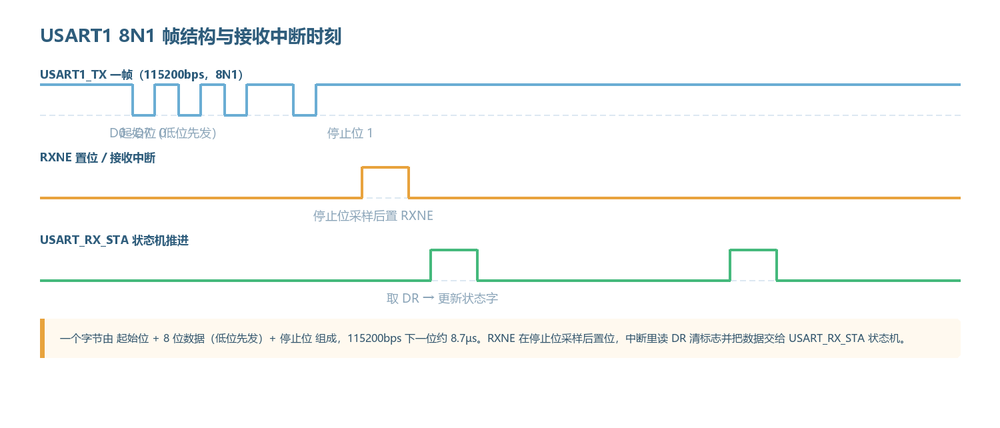
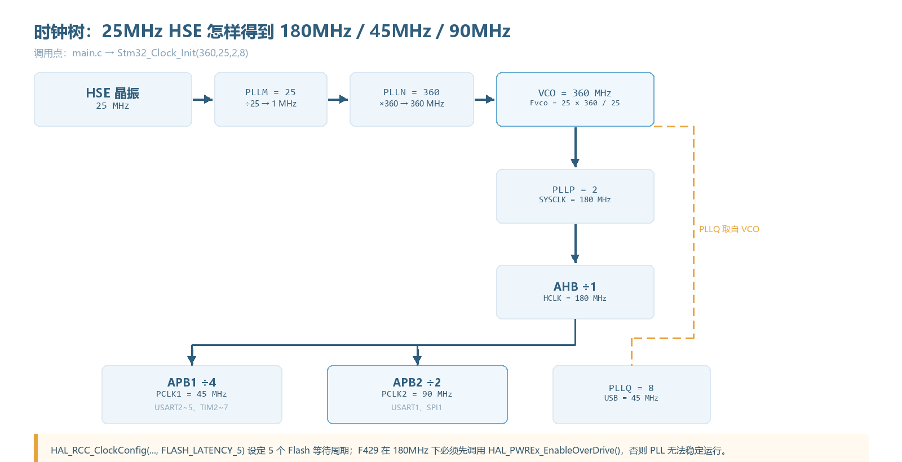
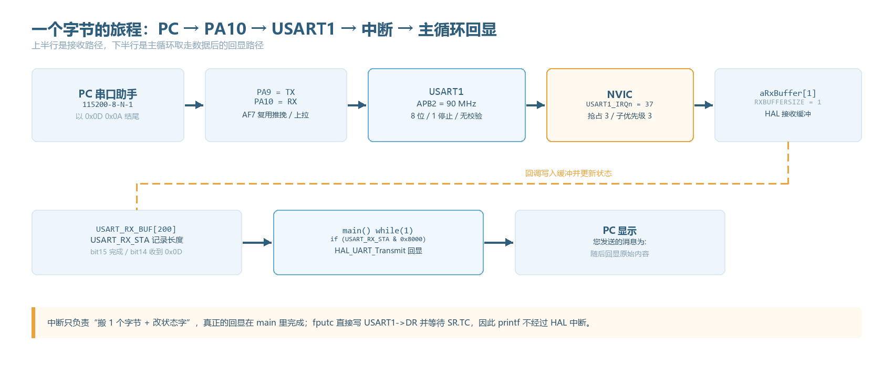
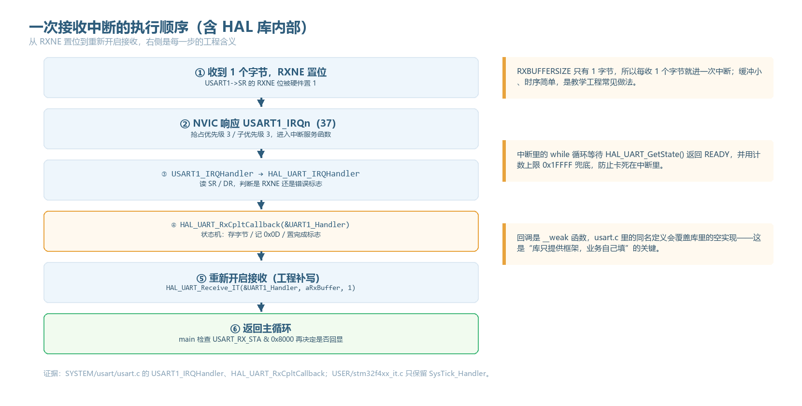
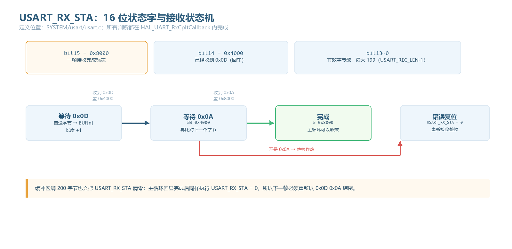

01 实验概述与硬件资源
用 USART1 与 PC 串口助手互发数据，接收断开后整帧回显
本实验的目标很简单：开发板通过 USART1 以 115200bps 接收 PC 发来的一行字符，当收到回车换行（0x0D 0x0A）时判定一帧结束，把收到的内容原样回显给 PC，同时用 LED0 闪烁提示系统在运行。
和“外部中断实验”相比，本实验的中断源从 GPIO 换成了串口：中断里不再做消抖，而是做逐字节搬运 + 状态字更新，主循环则负责回显。这一分工贯穿全篇。
引脚与资源分配
| 资源 | 引脚 / 外设 | 配置 | 在本实验中的作用 |
|---|
| 串口发送 | PA9 → USART1_TX | 复用推挽、上拉、高速、AF7 | printf 与 HAL_UART_Transmit 的输出口 |
| 串口接收 | PA10 → USART1_RX | 复用推挽、上拉、高速、AF7 | 接收 PC 数据，触发 RXNE 中断 |
| USART1 中断 | USART1_IRQn = 37 | 抢占 3 / 子优先级 3 | 每收到 1 字节进入一次 |
| LED0 | PB1 | 推挽输出、上拉、高速，初始置 1（灭） | 主循环 times%30==0 时翻转 |
| LED1 | PB0 | 同上，初始置 1（灭） | 本实验未使用，只做了初始化 |
| KEY0 / KEY1 / KEY2 / WK_UP | PA0 / PC13 / PH2 / PH3 | 输入：下拉 / 上拉 / 上拉 | 只调用 KEY_Init()，主循环未扫描 |
115200-8-N-1
HSE 25MHz → SYSCLK 180MHz
USART_REC_LEN = 200
RXBUFFERSIZE = 1
注意：KEY_Init() 在本实验里只是被调用，主循环并没有 KEY_Scan()，所以按键不会有任何现象——这是阅读源码时最容易“以为漏了代码”的地方。
02 工程目录与文件分工
先分清哪些是“本页要讲的自写代码”，哪些是 HAL 库与 CMSIS 提供的框架
| 文件 | 负责什么 | 本页关注点 |
|---|
CORE/startup_stm32f429xx.s | 定义栈、中断向量表与 Reset_Handler | 上电后第一条指令从哪里来 |
USER/main.c | 初始化顺序 + 主循环业务 | 6 个初始化调用的先后理由 |
SYSTEM/sys/sys.c | Stm32_Clock_Init 与 WFI_SET 等汇编小函数 | PLL 参数与分频系数 |
SYSTEM/delay/delay.c | delay_init / delay_us / delay_ms | SysTick 计数式延时 |
SYSTEM/usart/usart.c | fputc 重定向、uart_init、HAL_UART_MspInit、接收回调、USART1_IRQHandler | 本实验的主角，占 5 节篇幅 |
HARDWARE/LED/led.c | PB0 / PB1 推挽输出 | 为什么初始化后要写 1 |
HARDWARE/KEY/key.c | 4 个按键上/下拉输入 + KEY_Scan | 只初始化、不扫描 |
USER/stm32f4xx_it.c | 异常与中断入口 | 只保留 SysTick_Handler 与故障处理，串口中断写在 usart.c 里 |
HALLIB/、CORE/ 其余 | HAL 库与 CMSIS 内核文件 | 只讲调用点，不逐行展开 |
USART1_IRQHandler 之所以写在 usart.c 而不是 stm32f4xx_it.c，是因为正点原子的例程把“串口相关的一切”都收在一个文件里。名字必须与向量表里的弱符号完全一致，写在哪里都可以。
03 启动流程总览
从上电到 while(1)：先硬件后软件，先时钟后外设

图 3-1 复位 → 启动文件 → HAL_Init → 时钟 → 延时 → 串口 → 主循环

图 3-2 USART1 8N1 帧结构与接收中断时刻
串口是按位传输的：起始位拉低、8 位数据低位先发、停止位拉高，115200bps 下一位约 8.7µs。停止位采样完成后硬件置 RXNE 并进中断，中断里读 DR 清标志，再把字节交给 USART_RX_STA 状态机。
main 函数原文
int main(void)
{
u8 len;
u16 times=0;
HAL_Init(); //初始化HAL库
Stm32_Clock_Init(360,25,2,8); //设置时钟,180Mhz
delay_init(180); //初始化延时函数
uart_init(115200); //初始化USART
LED_Init(); //初始化LED
KEY_Init(); //初始化按键
while(1)
{
if(USART_RX_STA&0x8000)
{
len=USART_RX_STA&0x3fff; //得到此次接收到的数据长度
printf("\r\n您发送的消息为:\r\n");
HAL_UART_Transmit(&UART1_Handler,(uint8_t*)USART_RX_BUF,len,1000);
while(__HAL_UART_GET_FLAG(&UART1_Handler,UART_FLAG_TC)!=SET);
printf("\r\n\r\n");
USART_RX_STA=0;
}else
{
times++;
if(times%5000==0) { ... }
if(times%200==0)printf("请输入数据,以回车键结束\r\n");
if(times%30==0)LED0=!LED0;
delay_ms(10);
}
}
}
为什么必须是这个顺序
| 顺序 | 调用 | 如果提前或拖后会怎样 |
|---|
| 1 | HAL_Init() | 它要把 SysTick 配成 1ms 时基、设定优先级分组。若放到时钟之后，SysTick 会先按 16MHz 计算，1ms 变成 1/180ms |
| 2 | Stm32_Clock_Init(360,25,2,8) | 时钟不先升到 180MHz，后面算出的波特率、延时都是错的 |
| 3 | delay_init(180) | fac_us 必须等于最终 HCLK 的 MHz 数，参数写 180 与上一步强相关 |
| 4 | uart_init(115200) | 波特率寄存器由 PCLK2 分频得到，必须在时钟稳定之后写 |
| 5 | LED_Init() / KEY_Init() | 纯 GPIO，放到最后；不影响串口，但初始电平决定上电瞬间灯是亮还是灭 |
04 启动文件与中断向量表
复位那一刻，内核只认两个地址：0x08000000 取栈顶，0x08000004 取入口
STM32F429 上电后从 Flash 起始地址 0x08000000 取第一个字装入 MSP，再从 0x08000004 取出复位入口地址装入 PC。这两项由启动文件的向量表决定。
; 栈：0x400 = 1KB，栈顶地址即 __initial_sp
Stack_Size EQU 0x00000400
AREA STACK, NOINIT, READWRITE, ALIGN=3
Stack_Mem SPACE Stack_Size
__initial_sp
AREA RESET, DATA, READONLY
EXPORT __Vectors
__Vectors DCD __initial_sp ; 第 0 项：栈顶 → 0x08000000
DCD Reset_Handler ; 第 1 项：复位入口 → 0x08000004
DCD NMI_Handler
DCD HardFault_Handler
...
Reset_Handler PROC
LDR R0, =SystemInit ; 时钟/FPU 的前置配置
BLX R0
LDR R0, =__main ; C 运行库：分散加载 + 清零 .bss
BX R0
ENDP
串口中断在本实验里之所以能用，是因为向量表第 16 + 37 = 53 个表项（USART1_IRQn = 37）指向了弱符号 USART1_IRQHandler，而 usart.c 里定义了同名强符号，链接时自动覆盖。
| 阶段 | 执行内容 | 此时时钟 |
|---|
Reset_Handler | 取栈顶、跳 SystemInit | HSI 16MHz |
SystemInit | 使能 FPU、设置向量表基址等基础项 | HSI 16MHz |
__main | 把 .data 从 Flash 搬到 RAM、把 .bss 清零 | HSI 16MHz |
main() | 用户代码从这里开始 | HSI 16MHz → 第 2 步后变 180MHz |
__main 不是 main：前者是 ARM 编译器 C 库的入口，负责建立 C 运行环境；少了它，全局变量不会初始化，USART_RX_STA 的初值就可能是随机数。
05 HAL_Init：优先级分组与 1ms 时基
这一步做两件事：把 NVIC 优先级切成 2+2，把 SysTick 配成 1ms 节拍
HAL_StatusTypeDef HAL_Init(void)
{
/* 省略：Flash 预取、指令/数据 Cache 等库内部配置 */
HAL_NVIC_SetPriorityGrouping(NVIC_PRIORITYGROUP_2); // 2 位抢占 + 2 位子优先级
HAL_InitTick(TICK_INT_PRIORITY); // TICK_INT_PRIORITY = 0x0F
HAL_MspInit(); // 本工程未重写，走库内空实现
return HAL_OK;
}
HAL_InitTick() 内部调用 HAL_SYSTICK_Config(HAL_RCC_GetHCLKFreq() / 1000)。此刻系统还跑在 HSI 16MHz 上，所以这一轮先按 16000 装重装值；等到第 6 节 HAL_RCC_ClockConfig() 把 SYSCLK 切到 180MHz 时，库函数末尾会再用 HAL_InitTick(TICK_INT_PRIORITY) 重算一次，变成 180000，1ms 才真正准确。
| 阶段 | HCLK | SysTick 重装值 | 实际节拍 |
|---|
HAL_Init() 内 | 16 MHz（HSI） | 16000 | 1 ms |
HAL_RCC_ClockConfig() 后 | 180 MHz | 180000 | 1 ms |
优先级分组 2 的含义：4 位优先级里高 2 位表示抢占优先级（0~3），低 2 位表示子优先级（0~3）。数值越小优先级越高。本工程串口用 (3,3)，属于最低一档。
HAL_InitTick 失效的典型现象是 HAL_Delay 整体偏快 11 倍左右——因为它按 16MHz 算出的重装值，却在 180MHz 下运行。
06 Stm32_Clock_Init：从 25MHz 到 180MHz
一次调用同时定下 SYSCLK、HCLK、PCLK1、PCLK2 与 USB 时钟

图 6-1 PLLM/PLLN/PLLP/PLLQ 与各级分频
void Stm32_Clock_Init(u32 plln,u32 pllm,u32 pllp,u32 pllq)
{
// 调用点：Stm32_Clock_Init(360,25,2,8)
__HAL_RCC_PWR_CLK_ENABLE(); // 使能PWR时钟
__HAL_PWR_VOLTAGESCALING_CONFIG(PWR_REGULATOR_VOLTAGE_SCALE1); // 调压器级别1
RCC_OscInitStructure.OscillatorType=RCC_OSCILLATORTYPE_HSE; // 时钟源为HSE
RCC_OscInitStructure.HSEState=RCC_HSE_ON;
RCC_OscInitStructure.PLL.PLLState=RCC_PLL_ON;
RCC_OscInitStructure.PLL.PLLSource=RCC_PLLSOURCE_HSE;
RCC_OscInitStructure.PLL.PLLM=pllm; // 25
RCC_OscInitStructure.PLL.PLLN=plln; // 360
RCC_OscInitStructure.PLL.PLLP=pllp; // 2
RCC_OscInitStructure.PLL.PLLQ=pllq; // 8
ret=HAL_RCC_OscConfig(&RCC_OscInitStructure);
if(ret!=HAL_OK) while(1);
ret=HAL_PWREx_EnableOverDrive(); // 180MHz 必须开 Over-Drive
if(ret!=HAL_OK) while(1);
RCC_ClkInitStructure.SYSCLKSource=RCC_SYSCLKSOURCE_PLLCLK;
RCC_ClkInitStructure.AHBCLKDivider=RCC_SYSCLK_DIV1; // AHB /1
RCC_ClkInitStructure.APB1CLKDivider=RCC_HCLK_DIV4; // APB1 /4
RCC_ClkInitStructure.APB2CLKDivider=RCC_HCLK_DIV2; // APB2 /2
ret=HAL_RCC_ClockConfig(&RCC_ClkInitStructure,FLASH_LATENCY_5);
if(ret!=HAL_OK) while(1);
}
参数与结果对照
| 参数 / 分频 | 取值 | 算式 | 结果 |
|---|
| HSE | 25 MHz | HSE_VALUE 在 stm32f4xx_hal_conf.h 中定义为 25000000 | PLL 输入 25 MHz |
| PLLM | 25 | 25 ÷ 25 | 1 MHz（需落在 1~2MHz 建议区间） |
| PLLN | 360 | 1 × 360 | VCO = 360 MHz |
| PLLP | 2 | 360 ÷ 2 | SYSCLK = 180 MHz |
| AHB | /1 | 180 ÷ 1 | HCLK = 180 MHz |
| APB1 | /4 | 180 ÷ 4 | PCLK1 = 45 MHz（USART2~5、TIM2~7） |
| APB2 | /2 | 180 ÷ 2 | PCLK2 = 90 MHz（USART1、SPI1） |
| PLLQ | 8 | 360 ÷ 8 | USB / SDIO = 45 MHz |
| Flash 等待 | 5 WS | FLASH_LATENCY_5 | 180MHz 下必备，少设会跑飞 |
HAL_PWREx_EnableOverDrive() 只对 F42x/F43x 有效：不开 Over-Drive，180MHz 无法稳定，表现为程序偶尔死机或串口乱码。它必须在 HAL_RCC_OscConfig() 之后、HAL_RCC_ClockConfig() 之前调用。
07 delay_init：SysTick 计数式延时
不复位计数器、不开中断，直接读 SysTick->VAL 递减值累加
static u32 fac_us=0; // us延时倍乘数
void delay_init(u8 SYSCLK)
{
HAL_SYSTICK_CLKSourceConfig(SYSTICK_CLKSOURCE_HCLK); // SysTick 时钟 = HCLK
fac_us=SYSCLK; // 180
// SYSTEM_SUPPORT_OS = 0，这里的 OS 分支不参与编译
}
void delay_us(u32 nus)
{
u32 ticks;
u32 told,tnow,tcnt=0;
u32 reload=SysTick->LOAD;
ticks=nus*fac_us; // 需要的节拍数 = us × 180
told=SysTick->VAL;
while(1)
{
tnow=SysTick->VAL;
if(tnow!=told)
{
if(tnow<told)tcnt+=told-tnow; // 递减计数器，正常相减
else tcnt+=reload-tnow+told; // 跨越重装点
told=tnow;
if(tcnt>=ticks)break;
}
};
}
void delay_ms(u16 nms)
{
u32 i;
for(i=0;i<nms;i++) delay_us(1000); // 1ms = 1000us
}
| 项 | 值 / 说明 |
|---|
| SysTick 时钟源 | SYSTICK_CLKSOURCE_HCLK → 180MHz |
fac_us | 180，即 1us 对应 180 个计数 |
| 延时方式 | 轮询 SysTick->VAL，软件累加，不产生中断 |
| 与 HAL 时基的关系 | 共用同一个 SysTick，但 delay_* 只读 VAL，不改变 LOAD，所以不影响 HAL_IncTick 的 1ms 节拍 |
| 占用 | 死等，阻塞式；delay_ms(10) 期间 CPU 空转 |
delay_ms(1000) 在 16 位入参下最大 65535ms；delay_us 的入参是 u32，但 nus*180 在超过约 2386 万 us 时会溢出 32 位，工程里按毫秒级使用不会碰到。
08 uart_init：句柄参数与 HAL_UART_Init
填 6 个成员、调 1 次初始化、立刻开启接收中断

图 8-1 接收路径（上）与回显路径（下）
UART_HandleTypeDef UART1_Handler; // UART句柄
void uart_init(u32 bound)
{
UART1_Handler.Instance=USART1; // USART1
UART1_Handler.Init.BaudRate=bound; // 115200
UART1_Handler.Init.WordLength=UART_WORDLENGTH_8B; // 8 位数据
UART1_Handler.Init.StopBits=UART_STOPBITS_1; // 1 位停止
UART1_Handler.Init.Parity=UART_PARITY_NONE; // 无校验
UART1_Handler.Init.HwFlowCtl=UART_HWCONTROL_NONE; // 无硬件流控
UART1_Handler.Init.Mode=UART_MODE_TX_RX; // 收发模式
HAL_UART_Init(&UART1_Handler); // 内部会调用 MspInit
HAL_UART_Receive_IT(&UART1_Handler, (u8 *)aRxBuffer, RXBUFFERSIZE);
}
HAL_UART_Receive_IT() 做三件事：把接收缓冲指针与长度记进句柄、把状态切到 BUSY_RX、置位 UART_IT_RXNE。此后每来 1 个字节（RXBUFFERSIZE = 1）就进一次中断。
| 成员 | 取值 | 实际写入的寄存器 |
|---|
BaudRate | 115200 | USART1->BRR，由 PCLK2 = 90MHz 分频计算 |
WordLength | 8B | CR1.M = 0 |
StopBits | 1 | CR2.STOP = 00 |
Parity | NONE | CR1.PCE = 0 |
Mode | TX_RX | CR1.TE / CR1.RE 同时置 1 |
BRR 的计算依赖 PCLK2。若把 Stm32_Clock_Init 的 APB2 分频改成 /4（PCLK2 = 45MHz），波特率仍是 115200，但若 HSE_VALUE 与实物晶振不符，串口就会整体乱码——这是“代码没改、现象变了”的常见来源。
09 HAL_UART_MspInit：时钟、引脚与中断通道
HAL_UART_Init 的回调点，把“板子相关”的初始化集中在这里
void HAL_UART_MspInit(UART_HandleTypeDef *huart)
{
GPIO_InitTypeDef GPIO_Initure;
if(huart->Instance==USART1)
{
__HAL_RCC_GPIOA_CLK_ENABLE(); // 使能GPIOA时钟
__HAL_RCC_USART1_CLK_ENABLE(); // 使能USART1时钟
GPIO_Initure.Pin=GPIO_PIN_9; // PA9 = TX
GPIO_Initure.Mode=GPIO_MODE_AF_PP; // 复用推挽输出
GPIO_Initure.Pull=GPIO_PULLUP; // 上拉
GPIO_Initure.Speed=GPIO_SPEED_FAST;// 高速
GPIO_Initure.Alternate=GPIO_AF7_USART1;
HAL_GPIO_Init(GPIOA,&GPIO_Initure);// 初始化PA9
GPIO_Initure.Pin=GPIO_PIN_10; // PA10 = RX
HAL_GPIO_Init(GPIOA,&GPIO_Initure);// 初始化PA10
#if EN_USART1_RX
HAL_NVIC_EnableIRQ(USART1_IRQn); // 使能中断通道
HAL_NVIC_SetPriority(USART1_IRQn,3,3); // 抢占3 / 子3
#endif
}
}
| 动作 | 为什么不能省 |
|---|
| 使能 GPIOA 时钟 | F4 系列外设与 GPIO 时钟默认关闭，不使能则寄存器写入无效 |
| 使能 USART1 时钟 | 同上；两者都在 RCC 的 APB2 使能寄存器里 |
GPIO_PIN_10 也设成 AF_PP | RX 虽是输入方向，但复用功能必须由 MODER 选到 AF 模式才连到片上 USART |
GPIO_AF7_USART1 | PA9/PA10 的 AF7 才是 USART1，选错复用号会“配置成功但无数据” |
GPIO_SPEED_FAST | 115200 并不需要高速档，但正点原子统一用 FAST，便于兼容更高波特率 |
PA9 同时是 USB 的 VBUS 检测脚，某些核心板会并联分压电阻。若发现 TX 波形被拉低，先确认硬件上是否装了该分压。
10 NVIC 中断使能与优先级
分组 2 下，(3,3) 是最低一档，保证不抢占其它外设中断
| 项目 | 取值 | 说明 |
|---|
| 中断号 | USART1_IRQn = 37 | 向量表偏移 16 + 37 项 |
| 抢占优先级 | 3 | 分组 2 下范围 0~3，0 最高 |
| 子优先级 | 3 | 范围 0~3，仅同抢占级之间比较 |
| HAL 时基 | TICK_INT_PRIORITY = 0x0F | SysTick 取最低优先，避免打断外设 |
| 总中断开关 | 复位后默认开启 | main 未调用 INTX_DISABLE() |
使能顺序
HAL_NVIC_SetPriority(USART1_IRQn, 3, 3)：写 NVIC->IP[37]HAL_NVIC_EnableIRQ(USART1_IRQn)：置位 NVIC->ISER[1] 的对应位HAL_UART_Receive_IT()：置位 USART1->CR1.RXNEIE，真正允许“收到字节”这一事件产生中断
三步缺一不可：只做第 1、2 步，NVIC 通了但外设不产生请求；只做第 3 步，外设产生请求但 NVIC 不放行。
这个顺序在 usart.c 里被拆到了两处：前两步在 HAL_UART_MspInit，第三步在 uart_init 末尾。阅读时要把它们连起来看，否则会以为 HAL_UART_Init 之后就自动能收数据了。
11 printf 重定向：fputc 直写 DR
关掉半主机模式，把 printf 的每个字符送到 USART1
#pragma import(__use_no_semihosting) // 不使用半主机模式
struct __FILE { int handle; };
FILE __stdout;
void _sys_exit(int x) { x = x; } // 避免链接半主机相关函数
int fputc(int ch, FILE *f)
{
while((USART1->SR&0X40)==0); // 等 SR.TC = 1，发送完成
USART1->DR = (u8) ch; // 写入数据寄存器
return ch;
}
| 要点 | 解释 |
|---|
__use_no_semihosting | 告诉编译器不要生成通过调试器 I/O 的半主机调用，否则脱离调试器会卡死 |
struct __FILE + FILE __stdout | 标准库需要的一个输出流占位，重定向时必须提供 |
SR & 0x40 | 0x40 是 USART_SR_TC，即“整个字符移出完毕”，比 TXE 更严格 |
| 是否走中断 | 不走。轮询 TC 后直写 DR，因此 printf 与串口接收中断互不干扰，但发送期间是阻塞的 |
主循环里 printf 一行十几个字节，115200bps 下约 1ms，可以忽略；若改成 9600bps 且连续大量打印，会明显拖慢 LED0 的闪烁节奏。
12 USART1_IRQHandler：中断里的三段式
调一次 HAL_UART_IRQHandler，再等就绪，最后重新开启接收

图 12-1 从 RXNE 置位到重新开启接收
void USART1_IRQHandler(void)
{
u32 timeout=0;
u32 maxDelay=0x1FFFF;
HAL_UART_IRQHandler(&UART1_Handler); // 库函数：读SR/DR，调回调
timeout=0;
while (HAL_UART_GetState(&UART1_Handler) != HAL_UART_STATE_READY)
{
timeout++;
if(timeout>maxDelay) break; // 超时兜底
}
timeout=0;
while(HAL_UART_Receive_IT(&UART1_Handler,(u8 *)aRxBuffer,RXBUFFERSIZE) != HAL_OK)
{
timeout++;
if(timeout>maxDelay) break;
}
}
| 段 | 做了什么 | 工程含义 |
|---|
| ① 进入 | NVIC 跳转到本函数 | 名字必须与向量表弱符号一致 |
| ② 调库 | HAL_UART_IRQHandler 判 RXNE/ORE/错误，读 DR 清标志 | 真正的“搬字节”发生在这里，搬进 aRxBuffer[0] |
| ③ 回调 | 长度满足后调用 HAL_UART_RxCpltCallback | 业务代码的接口点，见第 13 节 |
| ④ 等就绪 | 轮询 HAL_UART_GetState() | HAL 内部把状态切成 BUSY_RX，等它回到 READY |
| ⑤ 重新开 | HAL_UART_Receive_IT 再挂 1 字节 | 关键：回调完成后 HAL 已结束本次接收，不重挂就只能收 1 个字节 |
| ⑥ 返回 | 中断返回，主循环继续 | USART_RX_STA 已被更新 |
两处 while 都带 0x1FFFF 次上限，是为了防止在中断里死等。也正因为是“中断里死等”，这段代码效率不高——usart.c 末尾被注释掉的旧版本直接把状态机写进 ISR，省掉了 HAL 的中间层。
13 USART_RX_STA：16 位状态字让中断只做搬运
bit15 完成、bit14 收到 0x0D、bit13~0 长度

图 13-1 状态字的位定义与状态迁移
u8 USART_RX_BUF[USART_REC_LEN]; // 200 字节接收缓冲
u16 USART_RX_STA=0; // bit15 完成 / bit14 收到0x0D / bit13~0 长度
u8 aRxBuffer[RXBUFFERSIZE]; // HAL 的 1 字节中转缓冲
void HAL_UART_RxCpltCallback(UART_HandleTypeDef *huart)
{
if(huart->Instance==USART1)
{
if((USART_RX_STA&0x8000)==0) // 本帧尚未完成
{
if(USART_RX_STA&0x4000) // 已收到 0x0D
{
if(aRxBuffer[0]!=0x0a)USART_RX_STA=0; // 不是 0x0A，整帧作废
else USART_RX_STA|=0x8000; // 接收完成
}
else // 还没收到 0x0D
{
if(aRxBuffer[0]==0x0d)USART_RX_STA|=0x4000;
else
{
USART_RX_BUF[USART_RX_STA&0X3FFF]=aRxBuffer[0];
USART_RX_STA++;
if(USART_RX_STA>(USART_REC_LEN-1))USART_RX_STA=0;
}
}
}
}
}
| 状态 | USART_RX_STA 形态 | 下一个字节的处理 |
|---|
| 等待 0x0D | 0x0000 ~ 0x00C7 | 普通字节存进 BUF[n]，低 14 位 +1；遇到 0x0D 则置 bit14 |
| 等待 0x0A | 0x4000 | n | 是 0x0A → 置 bit15；否则整个状态字清零，重新收 |
| 完成 | 0x8000 | n | 回调直接跳过，等主循环取走并清零 |
| 溢出保护 | 长度 > 199 | USART_RX_STA = 0，防止写穿 200 字节缓冲 |
长度用 USART_RX_STA&0x3FFF 取出，所以实际可用 200 字节；USART_REC_LEN-1 = 199 的边界判断保证最后一个字节只用于“放不下就复位”，缓冲区末尾仍留了 \n 之外的余量。
14 主循环：回显与空转两条分支
有完整帧就回显，没有就计数、提示、闪灯
while(1)
{
if(USART_RX_STA&0x8000) // 一帧收完
{
len=USART_RX_STA&0x3fff; // 本次长度
printf("\r\n您发送的消息为:\r\n");
HAL_UART_Transmit(&UART1_Handler,(uint8_t*)USART_RX_BUF,len,1000);
while(__HAL_UART_GET_FLAG(&UART1_Handler,UART_FLAG_TC)!=SET); // 等TC
printf("\r\n\r\n");
USART_RX_STA=0; // 允许收下一帧
}else
{
times++;
if(times%5000==0) { 打印实验标题 }
if(times%200==0)printf("请输入数据,以回车键结束\r\n");
if(times%30==0)LED0=!LED0; // 约 300ms 翻转一次
delay_ms(10);
}
}
现象与时间换算
| 触发条件 | 周期 | 现象 |
|---|
times%30==0 | 30 × 10ms ≈ 300ms | LED0 亮灭翻转，周期约 600ms |
times%200==0 | 200 × 10ms ≈ 2s | 串口打印“请输入数据,以回车键结束” |
times%5000==0 | 5000 × 10ms ≈ 50s | 串口打印实验标题行 |
USART_RX_STA & 0x8000 | 收到 0x0D 0x0A 即刻 | 回显“您发送的消息为:”+ 原始内容，状态字清零 |
交互演示：逐字节走一遍回调的状态机（仅演示逻辑，不涉及真实硬件）
LED0（PB1）
USART_RX_STA = 0x0000
串口输出：（空）
演示中的字节处理顺序与 HAL_UART_RxCpltCallback 的 if/else 分支一一对应，回显文本与 printf 字面量一致；真实硬件上每字节的那一步由中断完成，演示里是同步执行的。
15 总结与常见问题
把 6 个初始化调用与它们影响的寄存器串成一条线
| 顺序 | 调用 | 核心动作 | 影响的寄存器 / 结构 |
|---|
| 1 | HAL_Init() | 优先级分组 2、SysTick 1ms、MspInit | NVIC->AIRCR、SysTick->LOAD |
| 2 | Stm32_Clock_Init(360,25,2,8) | HSE→PLL→180MHz，开 Over-Drive | RCC->PLLCFGR、RCC->CFGR、FLASH->ACR |
| 3 | delay_init(180) | SysTick 时钟源 = HCLK，fac_us = 180 | SysTick->CTRL |
| 4 | uart_init(115200) | 填句柄、HAL_UART_Init、开接收中断 | USART1->BRR/CR1 |
| 5 | HAL_UART_MspInit | GPIOA/USART1 时钟、PA9/PA10 AF7、NVIC | RCC->AHB1ENR/APB2ENR、GPIOA->AFR |
| 6 | LED_Init / KEY_Init | PB0/PB1 输出置 1；PA0/PC13/PH2/PH3 输入 | GPIOB->ODR、GPIOx->PUPDR |
现象 → 原因 → 排查
| 现象 | 最可能原因 | 排查动作 |
|---|
| 串口助手完全无输出 | PA9/PA10 接反，或 MspInit 里时钟没使能 | 先量 PA9 空闲电平（应为高），再确认 GPIOA 与 USART1 时钟都已打开 |
| 输出乱码 | 波特率不匹配，或 HSE_VALUE 与实际晶振不符 | 核对 stm32f4xx_hal_conf.h 的 25000000 与板上晶振丝印 |
| 只收到 1 个字节 | ISR 里没有重新 HAL_UART_Receive_IT | 确认第 12 节第⑤段存在且返回 HAL_OK |
| 回车后不回显 | 发送没有以 0x0D 0x0A 结尾，bit15 永远不置位 | 串口助手勾选“发送新行”或手动加 \r\n |
| 收到一半后卡死 | 长度超过 199 触发清零，或帧中有 0x0D 却缺 0x0A | 检查发送内容是否含裸 0x0D，缩短单帧长度 |
| LED0 不闪 | 主循环一直停在回显分支，或 delay_ms 被串口阻塞 | 确认没有持续收到数据；printf 期间是阻塞的 |
printf 无输出但串口能自发自收 | 漏了 fputc 重定向或 __use_no_semihosting | 检查是否链接了半主机库、是否使用 MicroLIB 配置冲突 |
全链路回顾：向量表给出入口 → SystemInit/__main 建好运行环境 → HAL_Init 定优先级与时基 → 时钟升到 180MHz → delay 拿到 fac_us → 串口挂上中断 → 回调把字节搬进缓冲并改状态字 → 主循环看到 bit15 就回显并清零。